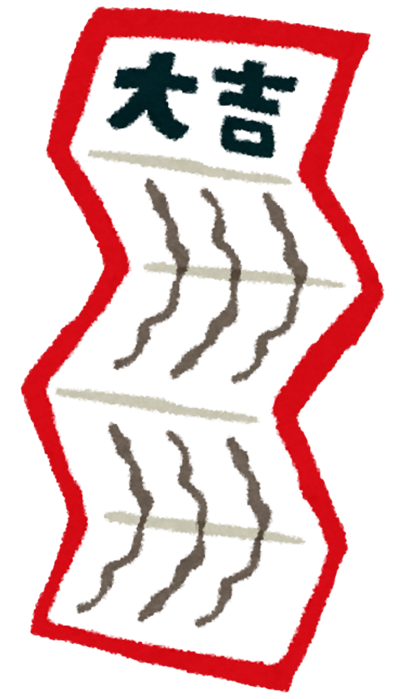

About Bento
A bento (弁当) is a single-portion take-out or home-packed meal of Japanese origin, often for lunch, typically including rice and packaged in a box with a lid (often a segmented box with different parts of the meal placed in different sections).
About Omikuji
Omikuji (御御籤/御神籤/おみくじ) are random fortunes written on strips of paper at Shinto shrines and Buddhist temples in Japan. Literally "sacred lot", these are usually received by making a small offering and randomly choosing one from a box, hoping for the resulting fortune to be good.
The omikuji predicts the person's chances of their hopes coming true, of finding a good match, or generally matters of health, fortune, life, etc. When the prediction is bad, it is a custom to fold up the strip of paper and attach it to a pine tree or a wall of metal wires alongside other bad fortunes in the temple or shrine grounds
